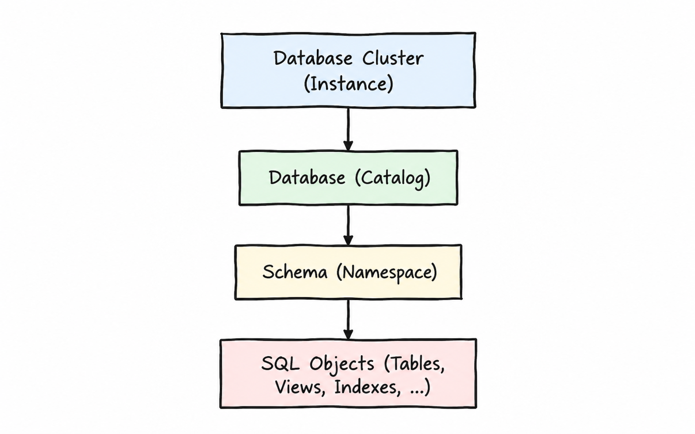
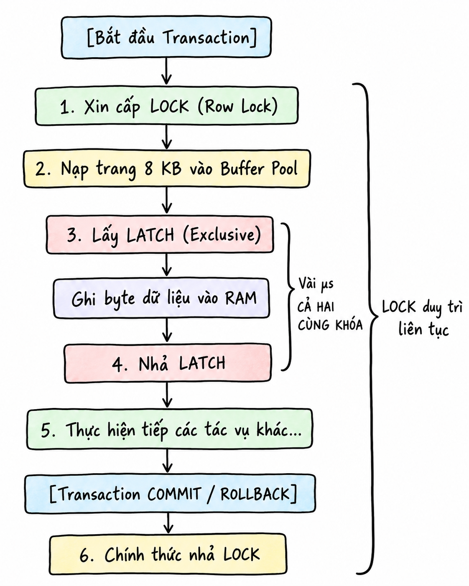
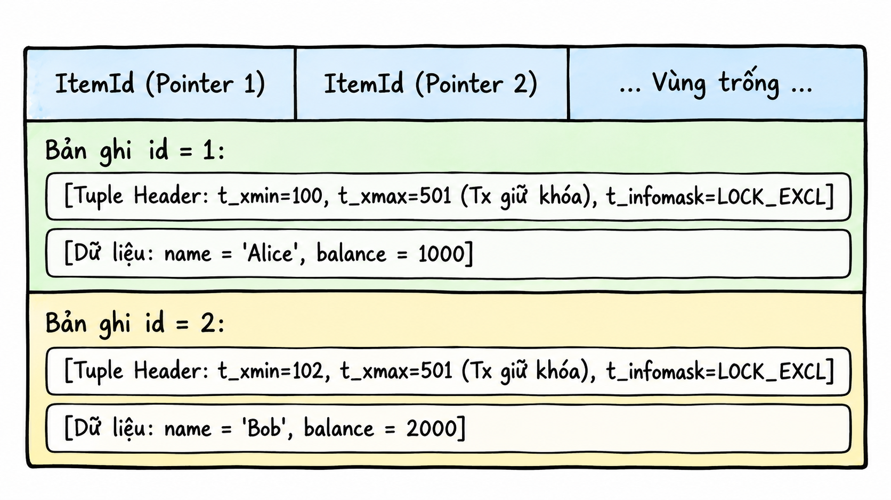
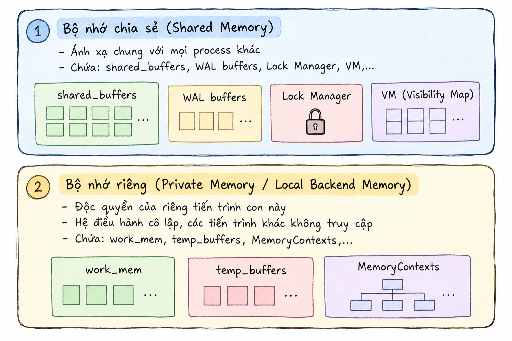
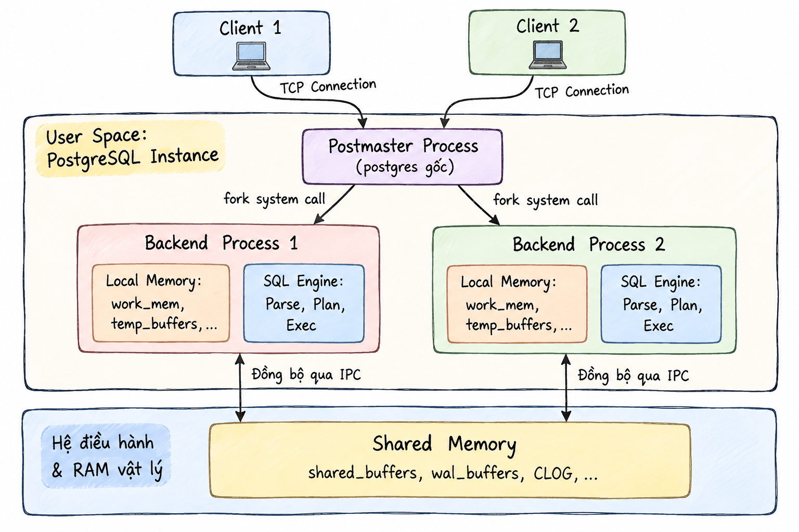
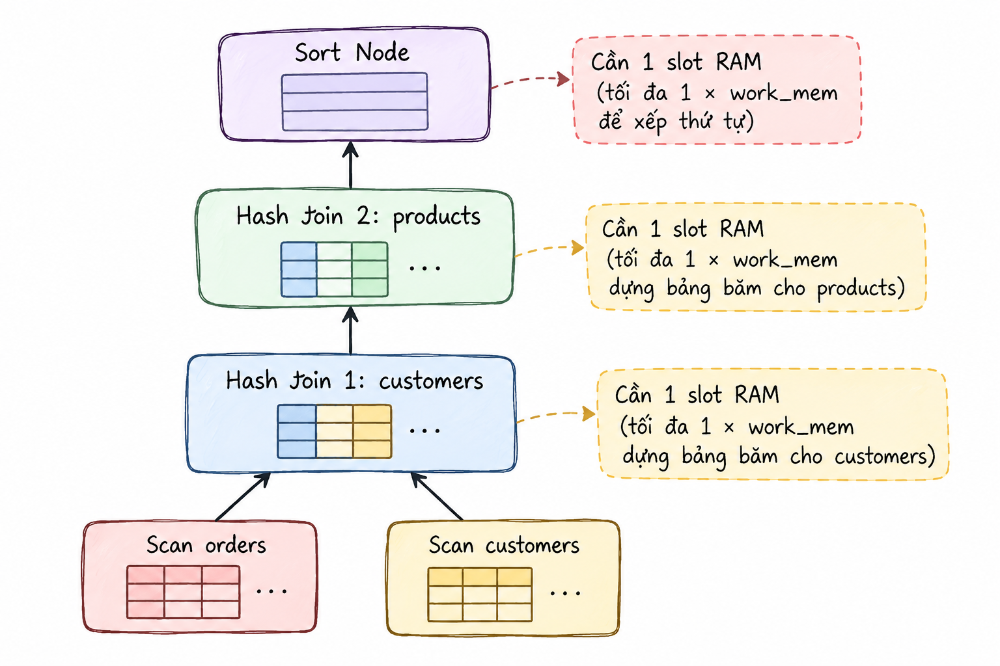
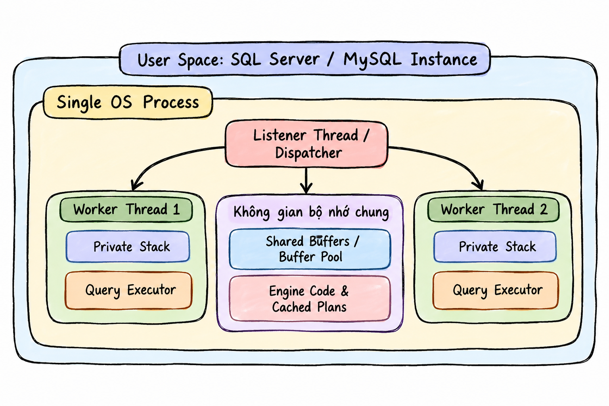

PostgreSQL
Phân cấp, tiến trình
& bộ nhớ
Đây là phần đầu của loạt hai bài về kiến trúc PostgreSQL. Ta bắt đầu từ Cluster, Database và Schema, sau đó tìm hiểu tiến trình, kết nối, khóa và bộ nhớ phục vụ truy vấn.
Trong loạt bài: Phần 1 — Phân cấp, tiến trình và bộ nhớ · Phần 2 — Truy vấn, lưu trữ và phục hồi.
Bốn tầng kiến trúc trong loạt bài:
- Tầng 1 — Tiến trình, kết nối và bộ nhớ · Phần 1.
- Tầng 2 — Xử lý truy vấn · Phần 2.
- Tầng 3 — Bộ nhớ đệm và giao dịch · Phần 2.
- Tầng 4 — Lưu trữ vật lý và phục hồi · Phần 2.
1. Phân cấp logic trong PostgreSQL
Sơ đồ phân cấp từ cao đến thấp của PostgreSQL:

Database Cluster (Instance)
Database Cluster (Instance) là một tiến trình PostgreSQL chạy trên máy chủ vật lý hoặc container. Mỗi database cluster có một vùng nhớ chung (shared_buffers) trên RAM và một thư mục dữ liệu (PGDATA) trên ổ đĩa. Dữ liệu của các database được lưu trong thư mục base/.
Database (Catalog)
Một database cluster có thể chứa nhiều database. Các database này không thể truy vấn chéo nhau, trừ khi sử dụng công cụ bên ngoài. Mỗi database có một thư mục riêng nằm trong thư mục PGDATA của database cluster.
Schema (Namespace)
Schema nằm trong database, và một database có thể có nhiều schema. Các bảng thuộc những schema khác nhau trong cùng database có thể truy vấn lẫn nhau.
Vì sao một database cần nhiều schema?
- Tránh trùng tên bảng: Khi nhiều người cùng sử dụng một database, việc chia thành các schema riêng biệt giúp tránh xung đột tên bảng. Ví dụ, schema A và schema B đều có thể chứa bảng
order. Hệ thống vẫn chấp nhận vì hai bảng cùng tên nằm trong các schema khác nhau. - Tiết kiệm tài nguyên: Nhiều người cùng sử dụng một database giúp tiết kiệm tài nguyên hơn so với việc mỗi người sử dụng một database riêng.
- Đơn giản hóa việc cấp quyền: Cấp quyền cho từng bảng trở nên khó khăn khi hệ thống mở rộng. Khi sử dụng schema, chỉ cần cấp quyền cho role trên schema đó.
Tầng 1: Tiến trình, kết nối và bộ nhớ
Các khái niệm về tiến trình, bộ nhớ và khóa
Tiến trình và luồng
Tiến trình: Một thực thể chạy độc lập, sở hữu không gian địa chỉ ảo riêng biệt. Không gian này là cơ chế trừu tượng hóa bộ nhớ của hệ điều hành, cụ thể là RAM. Các địa chỉ trong không gian được đánh số liên tục từ 0 đến địa chỉ cao nhất và chia thành hai phần: vùng nhớ riêng chứa các biến cục bộ và vùng nhớ dùng chung trỏ tới Shared Memory.
Sau đó, tiến trình chỉ cần sử dụng không gian địa chỉ ảo này. MMU (phần cứng tích hợp trong CPU) ánh xạ địa chỉ ảo đến địa chỉ vật lý thông qua Page Table (bảng trang dùng để ánh xạ địa chỉ ảo đến địa chỉ vật lý).
[ Tiến trình A ] [ Phần cứng: MMU ] [ RAM vật lý ]
Trang ảo: 0x1000 --------> (Tra bảng trang A) --------> Khung trang: 0x88000
[ Tiến trình B ]
Trang ảo: 0x1000 --------> (Tra bảng trang B) --------> Khung trang: 0x42000
Do bảng trang của tiến trình A không chứa ánh xạ tới các khung trang RAM vật lý thuộc về tiến trình B, nên tiến trình A hoàn toàn bị cô lập và không thể đọc hay can thiệp vào bộ nhớ riêng của tiến trình B.
Luồng: Một nhánh thực thi nằm bên trong một tiến trình. Tất cả các luồng chạy song song đều chia sẻ không gian địa chỉ ảo, phân vùng Heap, mã máy thực thi (Code Segment) và các kết nối mạng của tiến trình cha.
Mỗi luồng chỉ sở hữu một phân vùng Stack riêng biệt (thường có kích thước vài MB hoặc vài trăm KB, dùng để lưu các biến cục bộ, …) và con trỏ lệnh (Instruction Pointer) giúp CPU xác định vị trí mã mà luồng đã thực thi đến. Mỗi core trong CPU chỉ xử lý mã của một luồng duy nhất. Bộ điều phối của hệ điều hành (OS Scheduler) có thể luân chuyển một luồng từ core này sang core khác giữa các chu kỳ chạy. Vì vậy, core không được dành cố định cho một luồng. Khi một luồng cần đọc I/O và tạm thời chuyển sang trạng thái sleep, core có thể được dành cho luồng khác.
Bộ đệm shared_buffers
shared_buffers là dung lượng RAM mà một instance sử dụng làm bộ nhớ đệm, với mục đích chính là giảm thao tác đọc và ghi xuống ổ đĩa. Bộ đệm này nằm trong Shared Memory, vùng nhớ dùng chung cho các tiến trình.
Bộ đệm này được chia thành hàng nghìn khối nhỏ bằng nhau. Mỗi khối có kích thước 8 KB, bằng kích thước của một Data Page trên đĩa.
Latch, Lock và Lock Accumulation
Latch: Khóa ở cấp độ vật lý, giúp ngăn hai luồng ghi đè vào cùng một trang, chẳng hạn một luồng ghi và một luồng đọc trên cùng một trang 8 KB.
Giả sử bảng users có một trang dữ liệu 8 KB (Page 42) đang nằm sẵn trên RAM trong Buffer Pool. Trang này chứa 5 bản ghi, từ dòng 1 đến dòng 5.
Luồng A thực thi câu lệnh sửa dòng 1:
UPDATE users SET status = 'ACTIVE' WHERE id = 1;
Luồng B thực thi câu lệnh đọc dòng 5:
SELECT * FROM users WHERE id = 5;
Về mặt logic (Lock), luồng A chỉ khóa nghiệp vụ dòng 1, luồng B đọc dòng 5 nên không xung đột Lock với nhau. Tuy nhiên, cả hai dòng lại nằm chung trên một mảng byte vật lý 8 KB của Page 42:
Luồng A xin Exclusive Latch (khóa ghi vật lý): Luồng A lấy Exclusive Latch trên khung đệm chứa Page 42 để chuẩn bị ghi đè byte trạng thái của dòng 1.
Luồng B xin Shared Latch (khóa đọc vật lý): Cùng lúc đó, luồng B muốn đọc Page 42 để lấy dòng 5. Do luồng A đang giữ Exclusive Latch trên Page 42, luồng B bị chặn ngay lập tức, với thời gian chờ ở mức nanosecond hoặc microsecond.
Luồng A hoàn tất thao tác: Luồng A cập nhật vài byte trên RAM trong khoảng 1–2 microsecond, sau đó nhả Exclusive Latch.
Luồng B tiếp tục: Luồng B ngay lập tức có thể đọc an toàn dữ liệu ở dòng 5.
Nếu không có Latch, luồng B có thể đọc Page 42 đúng thời điểm CPU của luồng A đang ghi dở một phần số byte của tiêu đề trang (Page Header). Kết quả là luồng B đọc phải con trỏ hỏng.
Lock: Khóa bảo vệ dữ liệu nghiệp vụ logic (dòng, bảng, view), đảm bảo tính cô lập (Isolation) của các giao dịch theo chuẩn ACID. Ví dụ, khi giao dịch 1 đang UPDATE số dư tài khoản của khách hàng A, Lock ngăn giao dịch 2 sửa đổi hoặc đọc số dư đó cho đến khi giao dịch 1 hoàn tất.
Khi một dòng thay đổi, database sử dụng đồng thời cả hai loại khóa:

Sơ đồ trên đặt ra một câu hỏi: Tại sao hệ thống vẫn giữ khóa cũ khi đã chuyển sang thực hiện các tác vụ không còn liên quan đến dòng đó?
Trong suốt thời gian một giao dịch diễn ra, các khóa hoạt động theo nguyên lý tích lũy (Lock Accumulation). Khi bạn xử lý một dòng, hệ thống giữ khóa của dòng đó. Khi xử lý các dòng khác, hệ thống tiếp tục giữ khóa của các dòng mới đồng thời giữ cả khóa của dòng cũ. Chỉ khi gặp lệnh COMMIT hoặc ROLLBACK, hệ thống mới nhả khóa.
Vậy tại sao hệ thống không nhả khóa của dòng cũ khi xử lý các dòng khác? Nếu hệ thống nhả khóa ngay sau khi sửa xong id = 1, trình tự sau có thể xảy ra:
- Giao dịch ban đầu đã trừ 100 đồng ở
id = 1, nhưng chưa kịp cộng tiền choid = 2. - Một giao dịch khác đọc hoặc sửa đổi số dư của
id = 1. - Câu lệnh ở
id = 2gặp lỗi, chẳng hạn tài khoản bị khóa hoặc mất kết nối mạng, buộc toàn bộ giao dịch ban đầu phảiROLLBACKđể hoàn tiền lại choid = 1.
Lúc này, giao dịch kia đã sử dụng dữ liệu chưa hoàn tất để tính toán, gây ra lỗi Dirty Read hoặc Lost Update, phá vỡ tính nguyên tử (Atomicity) và tính cô lập (Isolation) của ACID.
Vị trí lưu trạng thái khóa của PostgreSQL khác với các hệ quản trị cơ sở dữ liệu khác:
Trong PostgreSQL, mỗi bản ghi (Tuple) trong bảng Heap luôn đi kèm một phần đầu cố định 23 byte gọi là HeapTupleHeaderData. Trong đó có các trường đóng vai trò kiểm soát khóa dòng:
t_xmin: Lưu Transaction ID đã tạo ra bản ghi này.t_xmax: Lưu Transaction ID (XID) của giao dịch đang sửa đổi hoặc đang giữ khóa dòng này.t_infomask: Tập hợp các cờ nhị phân báo hiệu mục đích khóa, ví dụ:HEAP_XMAX_LOCK_ONLY,HEAP_XMAX_EXCL,HEAP_XMAX_KEYSHR.
Ví dụ, một trang 8 KB (Page) trên Buffer Pool:

Tiếp nối phần lưu trữ trạng thái khóa, ta sẽ cùng tìm hiểu các loại khóa bảng trong PostgreSQL.
Các loại khóa bảng trong PostgreSQL
Khi một câu lệnh SQL được thực thi, PostgreSQL tự động cấp phát một trong 8 chế độ khóa cấp bảng tương ứng để bảo vệ cấu trúc hoặc dữ liệu bảng. Các khóa này được lưu trên RAM trong Shared Memory.
- Khi sử dụng câu lệnh
SELECT, hệ thống cấp phát một khóaAccessShareLock. Đây là loại khóa nhẹ nhất. Các khóa này có thể tồn tại đồng thời nên nhiều câu lệnhSELECTcó thể cùng thực thi. Khóa này chỉ xung đột vớiAccessExclusiveLock, được dùng khi chạy các câu lệnh thay đổi cấu trúc bảng nhưALTER TABLE. - Khi sử dụng
SELECT ... FOR UPDATE, hệ thống cấp khóa bảngRowShareLockđể bảo vệ cấu trúc bảng và ngăn các lệnh DDL. Đồng thời, hệ thống quét và khóa trực tiếp các dòng thỏa mãn điều kiện ở tầng bản ghi (Tuple Header). Khóa này chỉ xung đột vớiExclusiveLockvàAccessExclusiveLock. - Khi chạy các câu lệnh DML sửa đổi dữ liệu dòng như
INSERT,UPDATE,DELETEvàMERGE, hệ thống cấp khóaRowExclusiveLock. Khóa này xung đột vớiShareLock,ShareRowExclusiveLock,ExclusiveLockvàAccessExclusiveLock. - Khi các tiến trình nền thực thi, khóa này không chặn luồng đọc và ghi nên các tiến trình nền có thể chạy song song mà không gây downtime cho ứng dụng. Khóa xung đột với chính nó để đảm bảo chỉ có một tiến trình chạy tại một thời điểm.
- Khi chạy các câu lệnh như thêm Foreign Key hoặc tạo index, dữ liệu cần được giữ nguyên trong quá trình thực thi. Hệ thống cấp khóa
ShareRowExclusiveLock. Khóa này cho phép người dùng đọc nhưng không cho phép ghi hoặc thay đổi dữ liệu. ExclusiveLock: Chỉ cho phép các tiến trình đọc (AccessShareLock) chạy song song. Khóa này được kích hoạt bởiREFRESH MATERIALIZED VIEW CONCURRENTLY.- Khi chạy các lệnh DDL nặng như
ALTER TABLE,DROP TABLE,TRUNCATE,VACUUM FULLvàREINDEX, hệ thống dùng khóa độc quyền tuyệt đối, chặn toàn bộ luồng đọc và ghi (SELECT,INSERT,UPDATE,DELETE).
Điểm cần lưu ý: Trong PostgreSQL, khóa dòng được ghi trực tiếp vào trường
t_xmaxtrên header của từng bản ghi để tránh cạn kiệt bộ nhớ, còn khóa bảng được quản lý tập trung hoàn toàn trên RAM (trong Lock Manager) để kiểm tra và giải phóng tức thì.
Khi đã tìm hiểu cách các cơ sở dữ liệu lưu trạng thái khóa và các loại khóa của PostgreSQL, ta sẽ cùng tìm hiểu khái niệm Lock Escalation.
Lock Escalation (leo thang khóa) là cơ chế tự động của hệ quản trị cơ sở dữ liệu nhằm chuyển đổi nhiều khóa ở cấp độ chi tiết, như khóa dòng (Row Lock) hoặc khóa trang (Page Lock), thành một khóa duy nhất ở cấp độ bao quát hơn, thường là khóa toàn bảng (Table Lock), trong cùng một giao dịch.
Các hệ quản trị cơ sở dữ liệu như SQL Server lưu trữ khóa trên RAM. Một khóa thường tiêu tốn khoảng 64 đến 128 byte:
- Khóa 10 dòng: tốn khoảng 1 KB RAM.
- Khóa 100.000 dòng: tốn khoảng 10 MB RAM.
- Khóa 10.000.000 dòng: tốn khoảng 1 GB RAM chỉ để ghi nhớ danh sách các dòng đang bị khóa.
Để tránh Lock Manager chiếm hết RAM, SQL Server thường tự động kích hoạt Lock Escalation khi một câu lệnh giữ trên 5.000 khóa, thay thế các khóa này bằng một khóa độc quyền duy nhất ở cấp bảng.
Đối với PostgreSQL, vì các khóa dòng không lưu trữ trên RAM nên dù hệ thống khóa bao nhiêu dòng cũng không tiêu tốn RAM để lưu các khóa dòng này. Vì vậy, PostgreSQL không xảy ra Lock Escalation.
Mô hình đa tiến trình của PostgreSQL
PostgreSQL sử dụng mô hình đa tiến trình: mỗi client kết nối vào cơ sở dữ liệu có một tiến trình riêng biệt. Các tiến trình này trao đổi dữ liệu và đồng bộ thông qua Shared Memory.
Nếu Backend A vừa đọc một trang bảng từ đĩa vào shared_buffers (thành phần con lớn nhất trong Shared Memory), Backend B khi cần trang đó có thể đọc trực tiếp từ shared_buffers mà không cần truy cập ổ đĩa lần nữa.
Luồng hoạt động của kết nối
Luồng hoạt động như sau:
Tiến trình mẹ Postmaster chạy ngầm, khởi tạo Shared Memory và mở cổng mạng. Khi client gửi yêu cầu kết nối, Postmaster fork tiến trình hiện tại thành một tiến trình mới gọi là Backend Dedicated Process. Nhờ cơ chế của fork(), tiến trình backend con tự động kế thừa bảng trang để trỏ vào vùng Shared Memory dùng chung; các vùng bộ nhớ riêng phục vụ truy vấn được cấp phát động và chỉ thực sự ánh xạ vào RAM vật lý khi phát sinh thao tác đọc hoặc ghi.
Không gian địa chỉ tiến trình con:

Postmaster bàn giao socket kết nối mạng của client cho backend process mới, rồi lập tức đóng socket đó ở phía mình để tiếp tục lắng nghe các kết nối khác. Sau đó, backend process tự khởi tạo tài nguyên bộ nhớ. Mỗi tiến trình con sử dụng khoảng 5 MB đến 10 MB RAM, ngay cả khi ở trạng thái nhàn rỗi (Idle).

Bộ nhớ phục vụ truy vấn: work_mem
Trong mỗi backend process có work_mem. Đây là cấu hình giới hạn lượng RAM mà tiến trình yêu cầu cấp thêm để xử lý các tác vụ, được dùng cho các phép tính tốn tài nguyên như ORDER BY, DISTINCT, Hash Join, Merge Join và các hàm Window Function. work_mem không phải giới hạn trên mỗi truy vấn, mà là trên mỗi phép toán (node) trong cây thực thi (Execution Plan).
Pipeline và các phép toán chặn
Để dễ hiểu hơn, hãy xem cách PostgreSQL xử lý dữ liệu:
PostgreSQL xử lý dữ liệu theo mô hình đường ống (pipeline): kết quả của node cấp dưới được truyền dần lên node cấp trên.
Tuy nhiên, có những phép toán được gọi là Blocking Operator (phép toán chặn). Chúng phải tập hợp toàn bộ hoặc phần lớn dữ liệu vào RAM trước khi tiếp tục tính toán. Ví dụ như phép sort,..
Ví dụ, đối với node Hash Join 1, PostgreSQL yêu cầu cấp RAM tới mức trần work_mem. Cùng lúc đó, node Hash Join 2 và node Sort phía trên cũng cần được cấp RAM. Vì các node Hash phía dưới phải duy trì liên tục để thu thập đủ dữ liệu, xử lý và chuyển dữ liệu lên node phía trên, sẽ có một khoảng thời gian cả ba node cùng được duy trì và có thể chiếm tới 3 × work_mem.
RAM tối đa của 1 truy vấn ≈ ∑ (work_mem của các node cần gom dữ liệu đồng thời)
Ví dụ nhiều phép toán cùng sử dụng bộ nhớ
Minh họa bằng một câu truy vấn:
SELECT c.name, o.total, p.title
FROM orders o
JOIN customers c ON o.customer_id = c.id -- Phép toán 1: Hash Join
JOIN products p ON o.product_id = p.id -- Phép toán 2: Hash Join
ORDER BY o.total DESC; -- Phép toán 3: Sort

Khác với mô hình đa tiến trình của PostgreSQL, các cơ sở dữ liệu như MySQL và SQL Server sử dụng mô hình đa luồng.
Mô hình đa luồng của các hệ quản trị cơ sở khác
Mỗi client kết nối tới database được gán cho một luồng với dung lượng Stack nhỏ (256 KB đến 1 MB). Khi một luồng gặp lỗi nghiêm trọng, toàn bộ database instance có nguy cơ ngừng hoạt động.
Luồng hoạt động như sau:
Thiết lập kết nối: Client kết nối tới cổng của cơ sở dữ liệu.
Dispatcher tiếp nhận: Một luồng đặc biệt đóng vai trò lắng nghe kết nối (Listener Thread) đón nhận yêu cầu kết nối.
Cấp phát luồng: Thay vì gọi hệ điều hành tạo tiến trình mới, Listener kiểm tra Thread Pool của hệ thống và gán một luồng trống (Worker Thread) sẵn có cho client này.
Thực thi trực tiếp: Worker Thread xử lý câu lệnh SQL trực tiếp bên trong không gian bộ nhớ chung, đọc và ghi vào vùng bộ nhớ đệm Buffer Pool.
Trả luồng về Thread Pool: Khi client ngắt kết nối, luồng này không bị hủy hoàn toàn. Luồng dọn dẹp các biến trạng thái phiên làm việc (Session State) và trở về trạng thái nhàn rỗi trong Thread Pool để chờ kết nối tiếp theo.

Ưu và nhược điểm
Cả kiến trúc đa tiến trình và đa luồng đều có ưu điểm và hạn chế:
| Kiến trúc | Ưu điểm | Hạn chế |
|---|---|---|
| Đa tiến trình | Mỗi client có một tiến trình riêng, tạo sự độc lập trong xử lý. | Nhiều tiến trình tiêu tốn nhiều CPU và RAM. |
| Đa luồng | Các luồng chia sẻ tài nguyên trong cùng một tiến trình, xử lý nhanh và tiết kiệm CPU, RAM. | Một luồng gặp lỗi có thể ảnh hưởng đến các luồng khác. |
Tóm tắt và bước tiếp theo
Bạn đã có các khái niệm nền tảng: PostgreSQL tổ chức các đối tượng trong database và schema; các backend process xử lý kết nối, truy cập vùng nhớ chung và sử dụng bộ nhớ riêng để phục vụ truy vấn. Các cơ chế khóa giúp phối hợp truy cập dữ liệu.
Đọc tiếp Phần 2 — Truy vấn, lưu trữ và phục hồi để theo dõi SQL qua Parser, Planner và Executor, rồi tìm hiểu bộ đệm, WAL và lưu trữ vật lý.